AudienceDeck AI — 화면 캡처
이미지를 새 탭에서 열면 원본 크기로 볼 수 있습니다.
01문서 업로드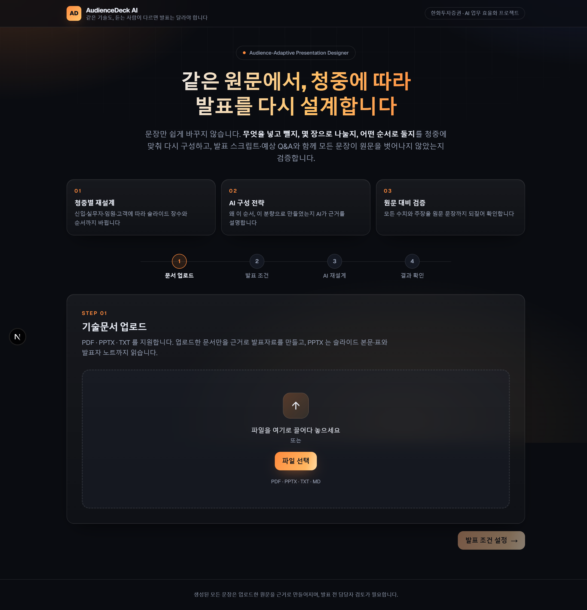
02업로드 완료 — 슬라이드 7장 · 1,558자 · 근거 5개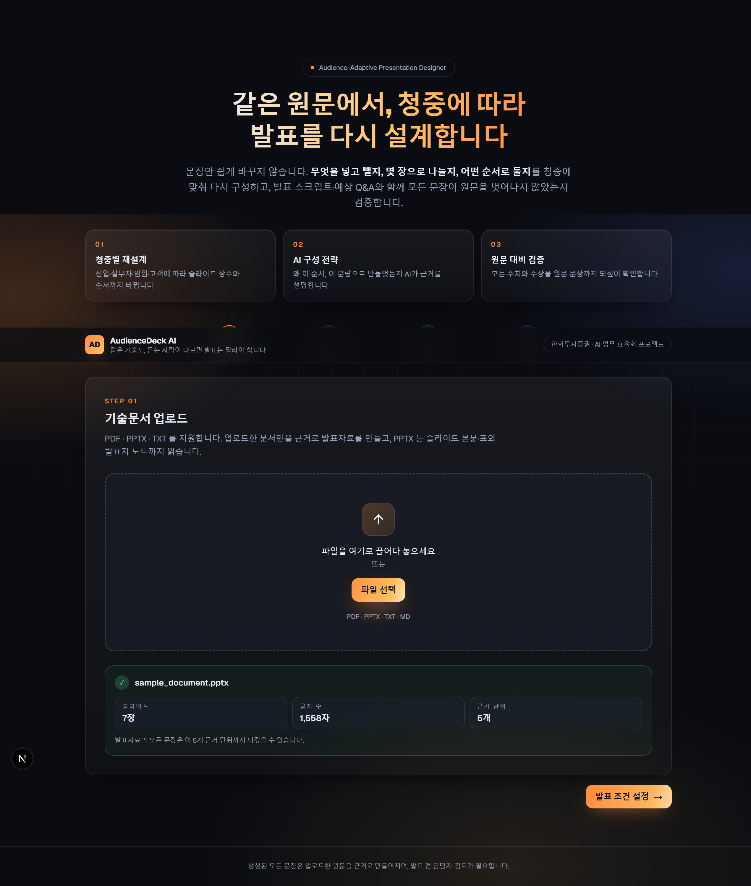
03발표 조건 — 청중·목적·시간·스타일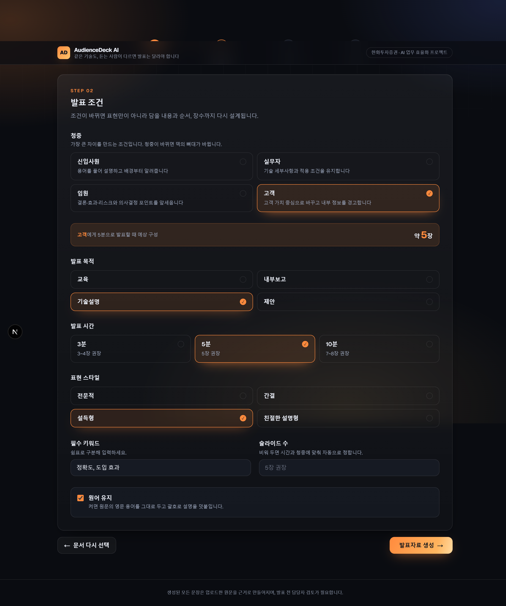
04결과 화면 상단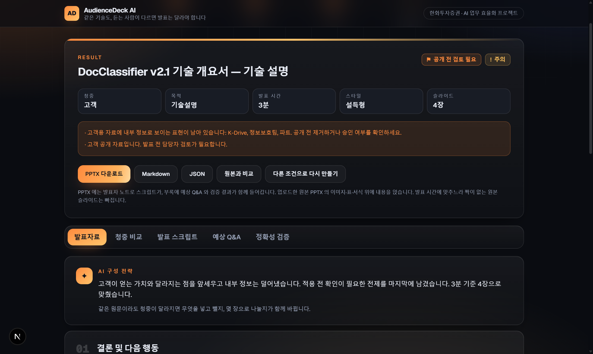
05발표자료 탭 — AI 구성 전략 + 슬라이드 4장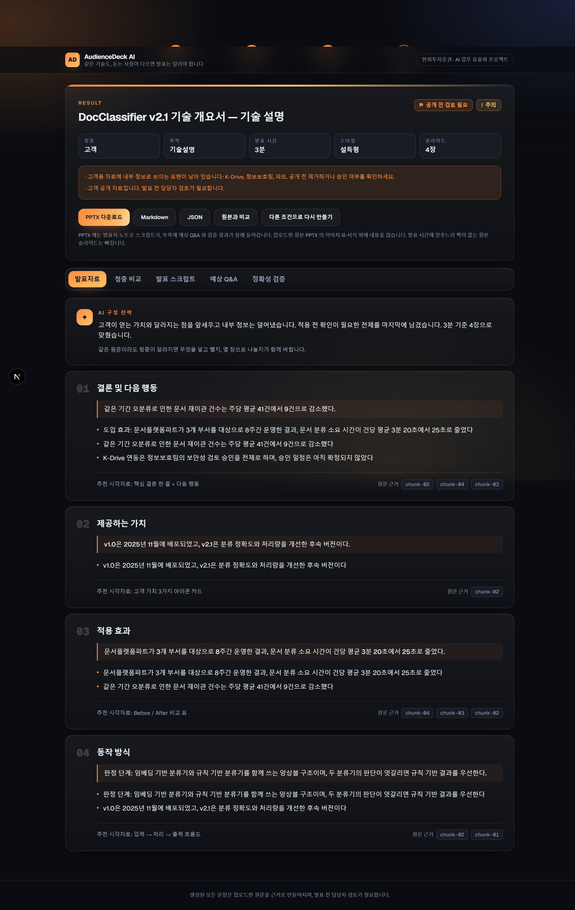
06청중 비교 탭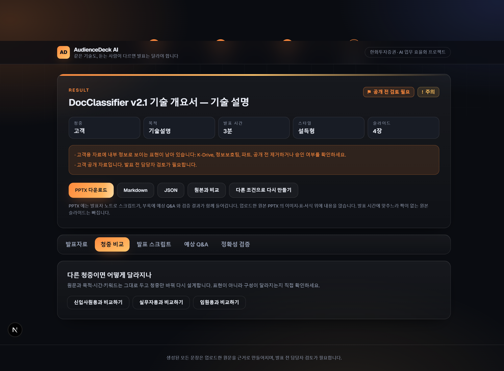
07원본과 비교 — 렌더링한 슬라이드 이미지 좌우 대조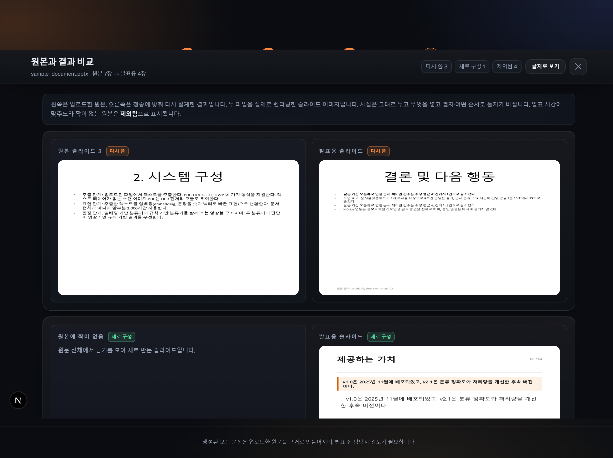
08원본과 비교 — 글자로 보기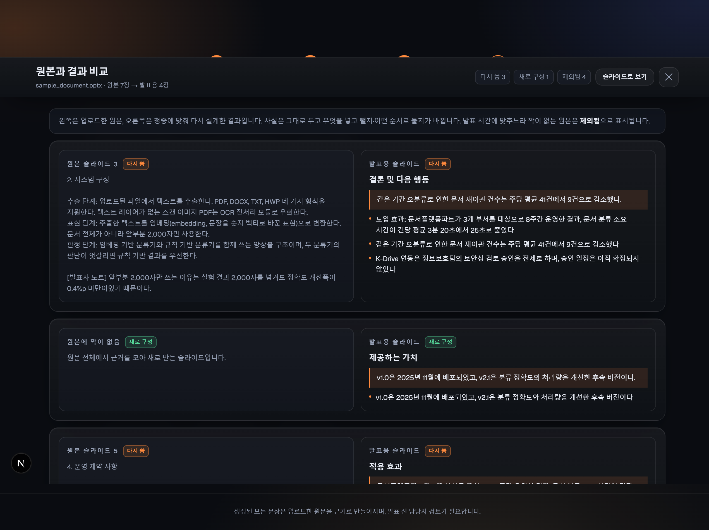
09발표 스크립트 탭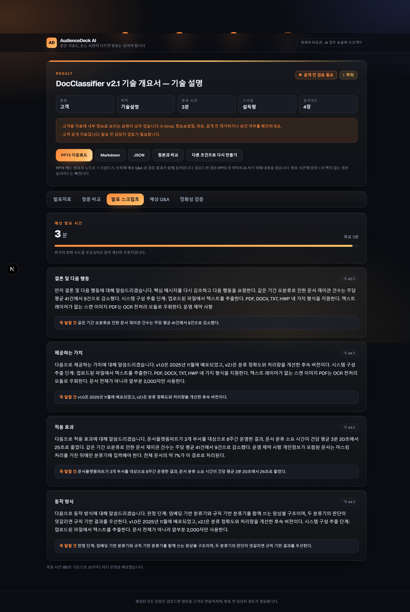
10예상 Q&A 탭 + 리허설 카드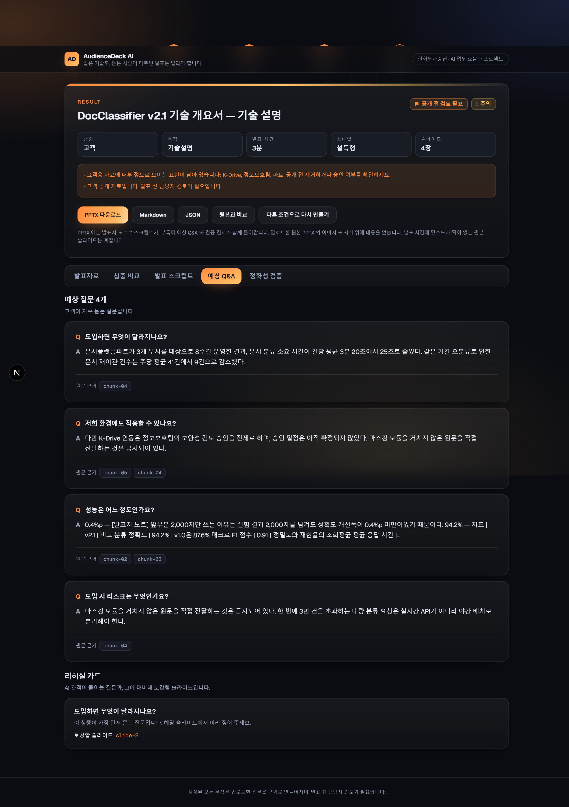
11정확성 검증 탭 — 확인 필요 5건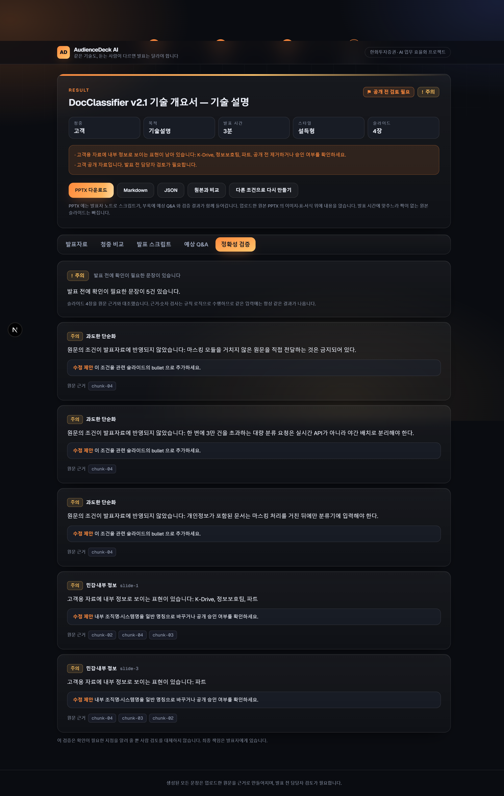